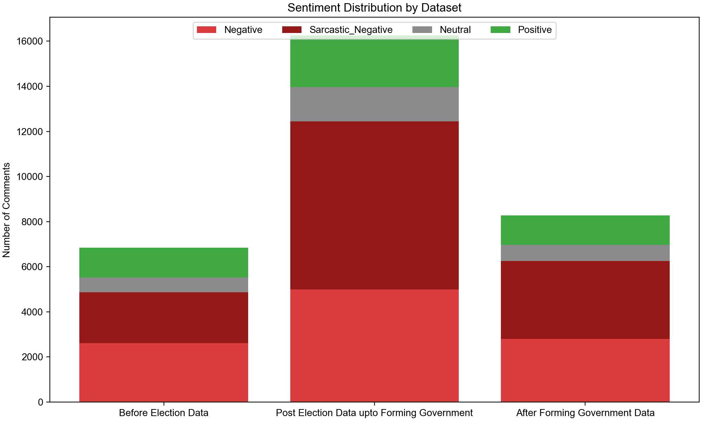
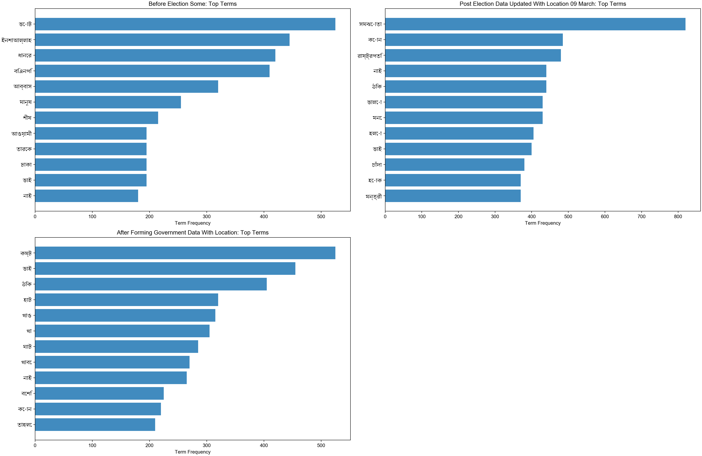
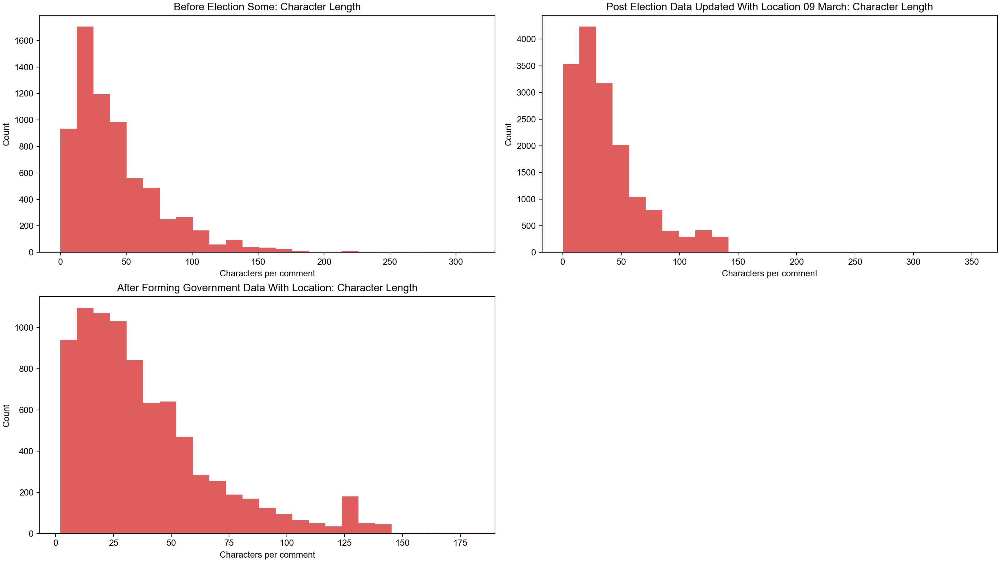
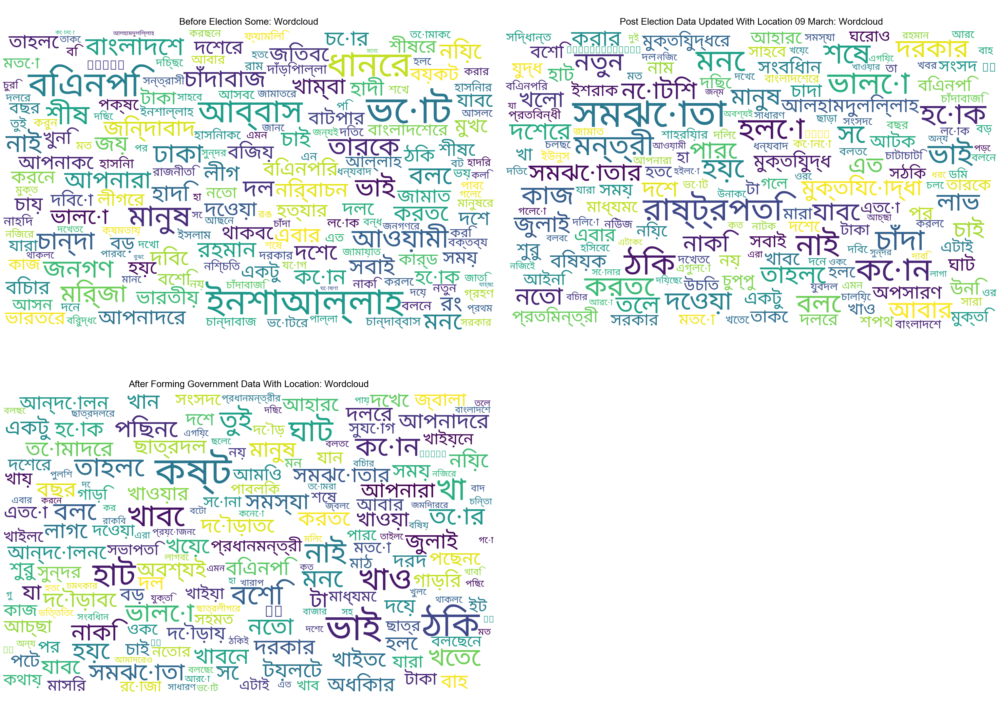

মানুষের মতামতের বিশ্লেষণ
Bangladesh Map
Bangladesh Sentiment Map
Top Locations Overall
Top Locations by Period
Sentiment by Top Locations
Text Sentiment Distribution
Text Top Terms
Topics by Dataset
Text Length Distribution
Text Wordcloud



